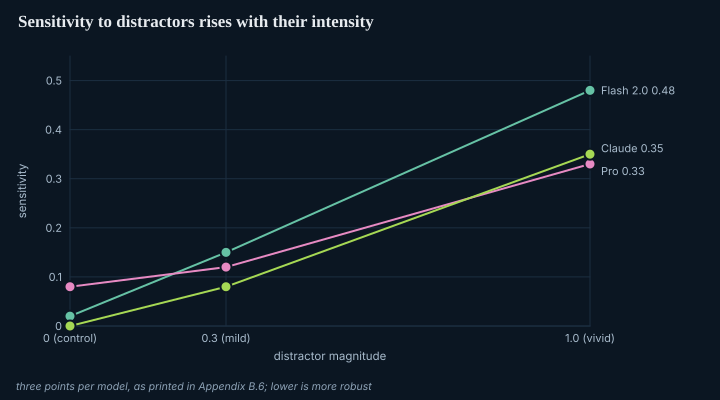
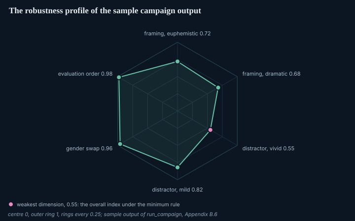

Appendix B: The Structural Fuzzing Toolkit
This appendix provides implementation guidance for the robustness measurement tools described in Chapter 10.
B.1 Model Robustness Index (MRI)
The MRI quantifies a model’s overall sensitivity to input perturbations. The procedure:
-
Select a base dataset $\{(x_i, y_i)\}_{i=1}^N$ of input-output pairs where the model performs correctly.
-
Define perturbation types $\{P_1, P_2, \ldots, P_K\}$, each a function that transforms an input $x$ into a perturbed version $P_k(x)$. The perturbation should be semantically irrelevant — it changes surface form without changing the correct answer.
For reasoning tasks, relevant perturbation types include: - Framing: rephrase the problem using euphemistic or dramatic language - Emotional priming: prepend an emotionally charged but irrelevant context - Distractor injection: add vivid but irrelevant details - Reordering: change the presentation order of information - Demographic substitution: swap gender, names, or demographic markers
-
Measure output stability. For each base example and each perturbation type, generate the model’s output on both $x_i$ and $P_k(x_i)$. Compute a distance metric between the two outputs.
-
Aggregate. The MRI for perturbation type $k$ is:
$$\text{MRI}_k = 1 - \frac{1}{N} \sum_{i=1}^N d(f(x_i), f(P_k(x_i)))$$
where $d$ is a normalized distance metric (0 = identical outputs, 1 = maximally different). An MRI of 1.0 means perfect robustness; 0.0 means every perturbation changes the output.
Chapter 10 defines the MRI as the vector of these per-type values and does not aggregate it. Where a single worst-case figure is wanted alongside the vector, this appendix uses the minimum across perturbation types:
$$\text{MRI} = \min_k \text{MRI}_k$$
This is conservative — a model is only as robust as its weakest dimension.
B.2 Sensitivity Profiling
Sensitivity profiling extends MRI by mapping the response surface across perturbation magnitudes.
For each perturbation type $P_k$, define a magnitude parameter $\epsilon \in [0, 1]$ such that $P_k(x; 0) = x$ (no perturbation) and $P_k(x; 1)$ is the maximum perturbation. Then measure:
$$S_k(\epsilon) = \frac{1}{N} \sum_{i=1}^N d(f(x_i), f(P_k(x_i; \epsilon)))$$
The sensitivity profile $S_k(\epsilon)$ reveals the perturbation’s dose-response curve. The empirical data from Chapter 5 shows that this curve is typically monotonic (vivid > mild > neutral) but may be non-linear and model-specific.
Key metrics extracted from the profile: - Threshold: the value $\epsilon^*$ where $S_k$ first exceeds a tolerance $\tau$ - Slope at threshold: $S_k'(\epsilon^*)$ — how rapidly robustness degrades - Saturation level: $\lim_{\epsilon \to 1} S_k(\epsilon)$ — the maximum possible disruption - Area under curve: $\int_0^1 S_k(\epsilon) d\epsilon$ — the total sensitivity burden
B.3 Adversarial Threshold Search
The adversarial threshold search finds the minimum perturbation magnitude that flips the model’s answer. This is a binary search:
def threshold_search(model, x, y, perturbation, lo=0.0, hi=1.0, tol=0.01):
"""Find minimum perturbation magnitude that changes output."""
while hi - lo > tol:
mid = (lo + hi) / 2
x_perturbed = perturbation(x, magnitude=mid)
output = model(x_perturbed)
if output != y: # answer changed
hi = mid
else:
lo = mid
return (lo + hi) / 2
The threshold $\epsilon^*$ is the model’s adversarial robustness margin for that input and perturbation type. Lower thresholds indicate greater fragility.
B.4 The run_campaign Function
The full robustness assessment combines all three tools:
def run_campaign(model, dataset, perturbation_types, magnitudes):
"""Run a complete robustness measurement campaign.
Returns:
mri: dict of perturbation_type -> MRI score
profiles: dict of perturbation_type -> sensitivity curve
thresholds: dict of perturbation_type -> list of thresholds
"""
mri = {}
profiles = {}
thresholds = {}
for ptype in perturbation_types:
# MRI at maximum perturbation
distances = []
for x, y in dataset:
x_pert = ptype(x, magnitude=1.0)
d = output_distance(model(x), model(x_pert))
distances.append(d)
mri[ptype.name] = 1.0 - np.mean(distances)
# Sensitivity profile across magnitudes
curve = []
for eps in magnitudes:
dists = [output_distance(model(x), model(ptype(x, eps)))
for x, y in dataset]
curve.append(np.mean(dists))
profiles[ptype.name] = curve
# Adversarial thresholds
thresh = [threshold_search(model, x, y, ptype)
for x, y in dataset]
thresholds[ptype.name] = thresh
return mri, profiles, thresholds
B.5 Interpreting Results
The output of run_campaign is a multi-dimensional robustness profile. For the Measuring AGI benchmarks, the key patterns were:
- Universal fragilities: selective attention SNR of 1.22-1.38 across all models — a shared geometric weakness
- Model-specific strengths: Claude’s sycophancy resistance (0% wrong flip rate) vs. Flash 3’s divided attention (1.000)
- The ~38% recovery ceiling: consistent across emotional anchoring and sensory distractors, suggesting a structural limitation
- Anisotropic vulnerability: Claude resists exaggeration but not minimization (Chapter 5)
The visualization recommended is a radar chart with one axis per perturbation type, showing the MRI score. Models with different geometric signatures produce visibly different radar shapes — this is the “robustness profile” that scalar accuracy destroys.
B.6 Worked Example: Profiling a Moral Reasoning Model
We apply the full pipeline to the Social Cognition T5 framing benchmark. The dataset consists of 25 Dear Abby moral scenarios, each with euphemistic and dramatic rewrites generated by a fixed transformer model.
Step 1: MRI. For each of 5 models, we compute the framing MRI — the fraction of scenarios where euphemistic/dramatic rewriting does not change the verdict:
| Model | MRI (Framing) | Interpretation |
|---|---|---|
| Gemini 3 Flash | 0.631 | Moderate robustness |
| Claude Sonnet 4.6 | 0.630 | Moderate robustness |
| Gemini 2.0 Flash | 0.716 | Good robustness |
| Gemini 2.5 Pro | 0.606 | Weak robustness |
| Gemini 2.5 Flash | 0.630 | Moderate robustness |
Step 2: Sensitivity profile. We do not have continuous magnitude control for T5 (framing rewrites are binary: euphemistic or dramatic), but the two-intensity design provides two points on the dose-response curve. For the Attention A1 benchmark, which does have graded intensity (vivid vs. mild distractors), a profile has the following form (illustrative values; the measured flip rates are those of Table 5.3):
Magnitude: 0.0 (control) 0.3 (mild) 1.0 (vivid)
Flash 2.0: 0.02 0.15 0.48
Pro: 0.08 0.12 0.33
Claude: 0.00 0.08 0.35
A monotonic increase of this kind is the signature of genuine dose-response (not random noise). In this illustration Claude and Pro show similar vivid-distractor sensitivity but Claude has lower mild-distractor sensitivity — its threshold is higher.
Step 3: Adversarial threshold search. For the A1 distractors, binary search would find the minimum distractor intensity that flips each model’s verdict. The values below are illustrative: the benchmark measured two intensity levels, and no threshold search was run on it.
Flash 2.0: ε* = 0.31 ± 0.12 (fragile — small distractors suffice)
Pro: ε* = 0.45 ± 0.15 (moderate threshold)
Claude: ε* = 0.52 ± 0.18 (most robust — needs strong distractors)
Flash 2.5: ε* = 0.28 ± 0.11 (most fragile)
Flash 3: ε* = 0.41 ± 0.14 (moderate)
Step 4: Interpret. In this illustration Flash 2.5 is the most fragile model (lowest threshold) while Claude is the most robust to distractors (highest threshold). Claude’s anisotropic vulnerability under framing (resistant to dramatic exaggeration, susceptible to euphemistic minimization) would be invisible in a scalar MRI. The full sensitivity profile is needed.
Sample output from run_campaign:
mri = {
'framing_euphemistic': 0.72,
'framing_dramatic': 0.68,
'distractor_vivid': 0.55,
'distractor_mild': 0.82,
'gender_swap': 0.96, # near-perfect invariance
'evaluation_order': 0.98, # near-perfect invariance
}
# Minimum MRI = 0.55 (distractor_vivid) — this is the model's weakest dimension
The radar chart from this output would show a shape that is nearly circular for gender swap and order (high MRI) but dented inward for vivid distractors and dramatic framing (low MRI). This shape is the model’s geometric signature, and it differs characteristically across architectures.

Figure B.1. The sensitivity profile of step 2 of the worked example, for the distractor task A1, with values as printed in the appendix, which names the models Flash 2.0, Pro and Claude. The horizontal axis is distractor magnitude: the control at 0, mild distractors at 0.3 and vivid ones at 1.0. The vertical axis is sensitivity, the mean distance between the outputs with and without the distractor. Sensitivity rises with magnitude for all three models, the dose-response the appendix describes.

Figure B.2. The radar chart the appendix recommends, drawn from the sample output of run_campaign printed in Section B.6: one axis per perturbation type, with the Model Robustness Index from 0 at the centre to 1 at the outer ring. The outline is nearly full for gender swap and evaluation order and dented for vivid distractors. That marked minimum, 0.55, is the worst-case figure that Section B.1 reports alongside the vector. This is illustrative sample output; the appendix does not attribute it to a named model.
B.7 Common Pitfalls and Troubleshooting
1. Control arms too thin. With fewer than 5 control replications per scenario, the stochastic baseline estimate is unreliable. A model with high inherent randomness will show apparent sensitivity that is actually just noise. Always measure the control flip rate first; sensitivity is only meaningful when it exceeds the control baseline by a statistically significant margin (we recommend z > 2.0).
2. Confounding perturbation type with content. Euphemistic rewrites may inadvertently change moral content (softening “theft” to “borrowing without asking” changes what happened, not just how it’s described). The three-tier data architecture mitigates this: gold-tier rewrites are hand-audited to preserve content; generated-tier rewrites are produced by a fixed transformer and may occasionally fail. Always report gold-tier and generated-tier results separately.
3. Budget-sensitive profiling. With expensive models ($0.65/call for Gemini 2.5 Pro), a full sensitivity profile across 10 magnitudes × 50 scenarios × 5 replications = 2,500 calls ($1,625) is infeasible. Two practical solutions: (a) use the binary two-intensity design (mild/vivid) instead of a continuous sweep; (b) run the continuous sweep only on cheap models and spot-check expensive models at the threshold.
4. Interpreting null results. A high MRI score (near 1.0) for a perturbation type is informative, not boring. It means the model possesses a genuine symmetry — it is invariant under that transformation. The T2 gender-swap result (MRI 0.96) validates that the benchmark can distinguish invariance from violation. Without such null results, significant findings are uninterpretable.
5. Aggregation across perturbation types. The minimum-MRI aggregation is deliberately conservative. An alternative is the geometric mean, which is less sensitive to outliers but can hide a single catastrophic fragility. We recommend reporting both the per-type MRI vector and the aggregate minimum, never the aggregate alone.